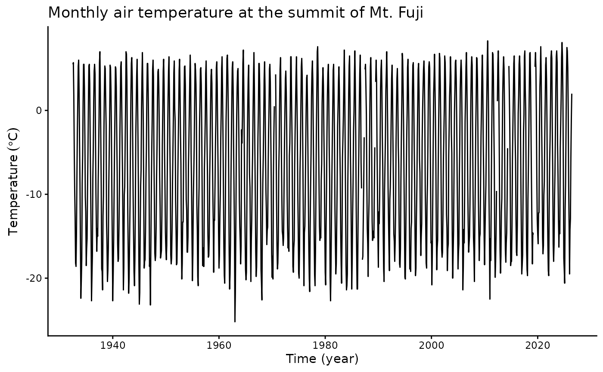
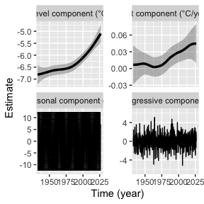
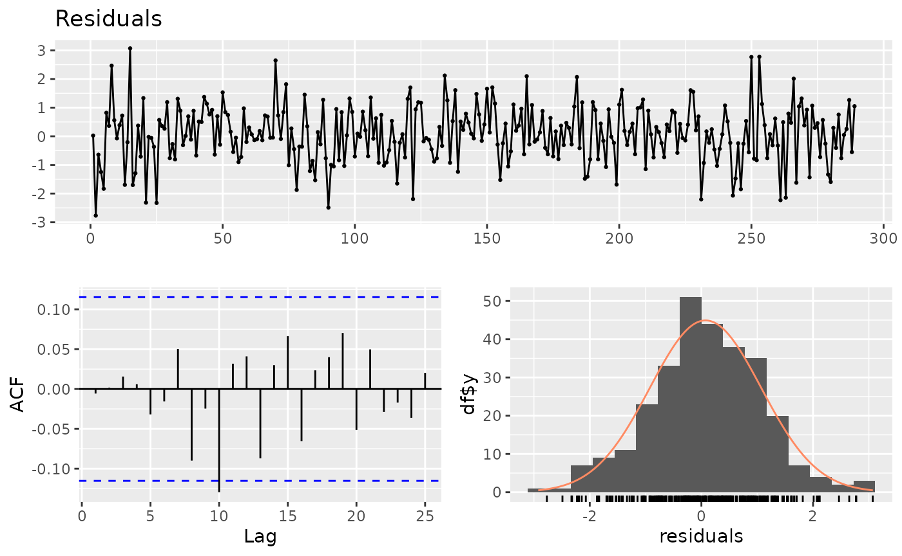

tempssm: State-space modeling for temperature time series in R
Version 0.3.0
Akira S. Hirao, Shinya Baba, and Momoko Ichinokawa
2026-08-01
Source:vignettes/getting-started.Rmd
getting-started.RmdSummary
tempssm is an R package for state-space modeling of
environmental temperature time series, including air and water
temperature observations. It provides a practical framework for
assessing how long-term trend, seasonal variation, autoregressive
dependence, and optional exogenous effects contribute to observed
temporal variation. The package facilitates the application of linear
Gaussian state-space models estimated by Kalman filtering and smoothing,
using the KFAS package as the computational backend
(Helske, 2017).
Key Features
- Fits linear Gaussian state-space models to environmental temperature time series.
- Represents temperature dynamics using interpretable latent components: long-term trend, seasonal variation, autoregressive dependence, and optional exogenous effects.
- Supports arbitrary seasonal frequencies, while the current examples and validation focus primarily on monthly temperature data.
- Allows users to specify an arbitrary order of the autoregressive component (default: AR(1)).
- Includes time-series cross-validation tools for model evaluation.
Input Data Format
R ts objects are the primary input format for
tempssm. The temperature series passed to
tempssm() should be supplied as a univariate
ts object, and optional exogenous variables can be supplied
as univariate or multivariate ts objects. The
ts class is base R’s standard format for regularly spaced
time series (see the stats::ts documentation: https://search.r-project.org/R/refmans/stats/html/ts.html).
The package also provides utility functions for converting common
tabular and observational data formats into ts objects
before model fitting.
The seasonal cycle used by tempssm() is taken from the
frequency attribute of the input ts object.
For example, frequency = 12 represents monthly data.
Prior Art and Scope
tempssm provides a domain-focused workflow for analyzing
temperature time series with linear Gaussian state-space models. It
brings together model construction, component extraction, uncertainty
summaries, residual diagnostics, visualization, and time-series
cross-validation in a single R package interface tailored to temperature
applications.
The package builds on established statistical methodology, including
linear Gaussian state-space modeling, Kalman filtering, and Kalman
smoothing. Model estimation is handled through the KFAS
package, which provides a general framework for state-space models in
R.
The initial implementation was adapted from the supplementary code provided by Baba (2024), accompanying Baba et al. (2024), which analyzed sea temperature trends using a linear Gaussian state-space model. The supplementary code is publicly available at:
https://github.com/logics-of-blue/sea-temperature-trend-jogashima
Compared with that prior implementation, tempssm extends
the workflow into a reusable R package interface with input validation,
documented S3 methods, tests, diagnostics, cross-validation utilities,
and examples for broader temperature time-series analysis.
Model Overview
The model implemented in tempssm can be viewed as an
extension of the Basic Structural Time Series Model (BSTSM), a standard
state-space formulation that represents an observed time series using
latent trend, seasonal, and irregular components. Following the
temperature time-series application of Baba et al. (2024),
tempssm keeps this interpretable decomposition and adds
autoregressive dependence and optional exogenous effects. This makes it
useful for separating long-term temperature change, seasonal cycles, and
short-term departures.
The model is estimated with KFAS, and
tempssm() returns both filtering and smoothing estimates.
Unless otherwise stated, the summaries, diagnostics, and plots in this
vignette use smoothed state estimates.
The full mathematical specification, including the observation equation, state decomposition, seasonal constraint, autoregressive component, exogenous component, parameter count, and estimation procedure, is described in the separate model specification document, available as a PDF in the package repository:
https://github.com/akihirao/tempssm/blob/main/vignettes/model-specification.pdf
Setup
Load tempssm before running the examples below. This
tutorial also uses forecast for simple time-series plots.
If forecast is not installed, please install it first with
install.packages("forecast").
The objective of this practice is to demonstrate the basic
application of a linear Gaussian state-space model to a univariate
temperature time series. This example introduces the basic workflow for
fitting a tempssm model, inspecting the summary output,
plotting latent components, checking residual diagnostics, and making
short-term predictions.
Example Dataset
This tutorial uses temp_MtFuji, a long-term monthly air
temperature time series observed at the summit of Mt. Fuji, Japan.
- Dataset: Monthly mean air temperature at the summit of Mt. Fuji, Japan
-
Format: Univariate
tsobject - Frequency: 12 (monthly)
- Unit: Degrees Celsius
- Period: July 1932 to June 2026
The dataset was created by processing content from the Japan Meteorological Agency (JMA), Past Weather Data Download page: https://www.data.jma.go.jp/risk/obsdl/index.php. The series may contain missing values from the source data; values with JMA quality flags below 8, where 8 indicates a normal value with no quality problem, are also treated as missing values.
## Jul Aug Sep Oct Nov Dec
## 1932 5.5 5.7 1.8 -4.6 -9.5 -12.9
summary(temp_MtFuji)## Min. 1st Qu. Median Mean 3rd Qu. Max. NAs
## -25.20 -14.60 -5.80 -6.36 2.00 8.30 11This dataset contains missing observations. tempssm()
can retain missing values in the response temperature series and treat
them as unobserved responses during Kalman filtering and smoothing.
Plot the Time Series
We begin by visualizing the monthly air temperature time series to examine its overall structure, including apparent trends, seasonal variability, and whether missing observations are present.
plt_mtfuji_temp <- forecast::autoplot(temp_MtFuji) +
ggplot2::labs(
y = expression(Temperature ~ (degree * C)),
x = "Time (year)"
) +
ggplot2::ggtitle("Monthly air temperature at the summit of Mt. Fuji") +
ggplot2::theme_classic()
plot(plt_mtfuji_temp)
The overall mean air temperature is approximately -6.4 °C, and a clear annual seasonal pattern is visible. The series contains 11 missing observations. Although the observed temperature appears to increase gradually over the long term, year-to-year variation and strong seasonality make the underlying trend difficult to assess from the raw time series alone.
Fit a State-Space Model
When a ts object containing temperature time-series data
(here, temp_MtFuji) is passed to the core function
tempssm(), model construction and parameter estimation are
performed together. The returned S3 object of class tempssm
(here, res) stores the filtering and smoothing estimates,
as well as the constructed model and input data. By default,
tempssm() fits a first-order autoregressive model.
# model with first-order autoregressive component
res <- tempssm(temp_MtFuji) # AR(1), the default model
summary(res)## tempssm summary
## -----------------
## Call:
## tempssm(temp_data = temp_MtFuji)
##
## Model fit:
## Likelihood type: marginal
## Log-likelihood : -2055.83
## k : 5
## Diffuse states : 13
## Converged : TRUE
##
## Variance parameters:
## Observation (H): 0.4919418
## State (Q trend): 1.146228e-08
## State (Q season): 4.153711e-24
## State (Q ar): 1.901346
##
## Components of auto-regression:
## Order of AR: 1
## Coefficient of AR1: 0.2564485First, confirm from the summary output that the model has converged
(Converged: TRUE). The summary also reports the
log-likelihood, parameter count (k), likelihood type, and
number of diffuse initial states. The estimated parameters include the
observation error variance (H) and the process error
variances for the long-term trend (Q trend), seasonal
component (Q season), and autoregressive component
(Q ar), as well as the autoregressive coefficient
(AR1 in the default model). See the detailed manual for
extracting and using these quantities directly; its location is listed
at the end of this quick tutorial.
Plot Model Components
We visualize the estimated long-term evolution of temperature levels and their rates of change (drift) by extracting the corresponding latent components from the state-space model. Additionally, seasonal variability and autoregressive dependence are plotted out, allowing the underlying trend behavior to be examined more clearly.
# plot all components at once
plot(res)
The level component summarizes gradual changes in the underlying temperature level after removing the dominant seasonal pattern. In this example, the estimated long-term level indicates a gradual increase in temperature over the study period. The drift component is positive on average but small relative to the seasonal variation. The seasonal component captures the recurring annual cycle, while the autoregressive component represents shorter-term departures from the trend and seasonal pattern. The shaded gray areas represent 95% confidence intervals for the estimated latent states, illustrating the uncertainty associated with each estimated component.
The standard plotting interface is plot(res). The
explicit helper plot_tempssm_components(res) produces the
same component plot and can be useful in scripts where a descriptive
function name is preferred. The ggplot2-style S3 interface
ggplot2::autoplot(res) is also available. These interfaces
return a faceted ggplot object, so selected components can
be stored and customized with standard ggplot2 layers, for example,
plot_tempssm_components(res, component = c("level", "drift")) + ggplot2::theme_bw().
Check Residual Diagnostics
The package provides diagnostic tools for checking whether the fitted model has left notable structure in the residuals. In particular, residual time-series plots, residual autocorrelation, residual distributions, and Ljung-Box tests can be used to assess remaining temporal dependence and departures from the Gaussian error assumption.
resid <- get_tempssm_residuals(res)
plot_tempssm_residuals(resid)
diag <- diagnose_residual_ts(resid)
diag## # A tibble: 1 × 8
## lb_stat lb_lag lb_df lb_pvalue kurtosis n n_missing n_finite
## <dbl> <int> <int> <dbl> <dbl> <int> <int> <int>
## 1 4.48 12 12 0.973 4.39 1128 24 1104Here, get_tempssm_residuals() extracts standardized
recursive residuals. plot_tempssm_residuals() displays the
residual time series in the upper panel, the ACF plot in the lower-left
panel, and the residual frequency distribution in the lower-right panel.
diagnose_residual_ts() returns a compact table with the
Ljung-Box test and residual kurtosis. For monthly data, the default
Ljung-Box lag is 12. These plots and the test result should be checked
for any notable residual patterns. In this example, the Ljung-Box test
indicated no significant residual autocorrelation up to lag 12 (P >
0.05).
For more detailed discussion of residual diagnostics, see the detailed manual.
Extract Components
The fitted object stores the smoothed latent states in
res$kfs$alphahat. Each column corresponds to one state
component in the state-space model, such as the level, drift, seasonal
states, and autoregressive state. Looking at the first few rows is
useful for understanding how the model output is organized.
# Smoothing estimates
alpha_hat <- res$kfs$alphahat
head(alpha_hat)## level slope sea_dummy1 sea_dummy2 sea_dummy3 sea_dummy4
## Jul 1932 -6.816007 0.0005640189 11.386172 7.235620 2.725050 -2.300199
## Aug 1932 -6.815443 0.0005640232 12.425581 11.386172 7.235620 2.725050
## Sep 1932 -6.814879 0.0005640323 9.370378 12.425581 11.386172 7.235620
## Oct 1932 -6.814315 0.0005640433 3.464614 9.370378 12.425581 11.386172
## Nov 1932 -6.813751 0.0005640506 -2.878391 3.464614 9.370378 12.425581
## Dec 1932 -6.813187 0.0005640533 -9.076789 -2.878391 3.464614 9.370378
## sea_dummy5 sea_dummy6 sea_dummy7 sea_dummy8 sea_dummy9 sea_dummy10
## Jul 1932 -8.183394 -11.668060 -12.500582 -9.076789 -2.878391 3.464614
## Aug 1932 -2.300199 -8.183394 -11.668060 -12.500582 -9.076789 -2.878391
## Sep 1932 2.725050 -2.300199 -8.183394 -11.668060 -12.500582 -9.076789
## Oct 1932 7.235620 2.725050 -2.300199 -8.183394 -11.668060 -12.500582
## Nov 1932 11.386172 7.235620 2.725050 -2.300199 -8.183394 -11.668060
## Dec 1932 12.425581 11.386172 7.235620 2.725050 -2.300199 -8.183394
## sea_dummy11 arima1
## Jul 1932 9.370378 0.74270050
## Aug 1932 3.464614 0.07576104
## Sep 1932 -2.878391 -0.64035911
## Oct 1932 -9.076789 -1.00172106
## Nov 1932 -12.500582 0.22370692
## Dec 1932 -11.668060 2.40713410For routine use, helper functions provide a simpler way to extract
individual components as ts objects with the original time
index. The level component represents the estimated long-term
temperature level, while the drift component represents its rate of
change per year.
# Smoothing estimate of level component
level_ts <- get_level_ts(res)
# Smoothing estimate of drift component
drift_ts <- get_drift_ts(res)
# Average drift rate per year across the full period
mean_drift_year <- mean(drift_ts)
mean_drift_year## [1] 0.01830289Average annual change in air temperature is approximately 0.02 °C. This value is the mean of the estimated drift component over the full observation period, and can be read as a model-based summary of the average long-term rate of temperature change.
Make Short-Term Predictions
A fitted tempssm object can also be passed to
predict() to obtain short-term predictions. By default,
predict(res) returns a one-step-ahead prediction beyond the
end of the observed series. This is useful for visual checks of how the
fitted model extrapolates the estimated level, seasonal, and
autoregressive components.
pred_1 <- predict(res)
pred_1## Jul
## 2026 6.276348Predictions for multiple future time points can be requested by
setting the n.ahead argument.
pred_12 <- predict(res, n.ahead = 12)
pred_12## Jan Feb Mar Apr May Jun
## 2026
## 2027 -17.573777 -16.737527 -13.249136 -7.362216 -2.333244 2.181051
## Jul Aug Sep Oct Nov Dec
## 2026 6.276348 7.330106 4.281351 -1.619989 -7.959092 -14.153719
## 2027These predictions should be interpreted as model-based extrapolations rather than definitive forecasts. Uncertainty generally increases as the prediction horizon becomes longer, and long-horizon predictions can be sensitive to model assumptions about trend, seasonality, and autoregressive dependence.
Read Your Own CSV Data
For monthly temperature data stored in a CSV file, prepare columns
named Year, Month, and Temp. Use
NA for missing temperature values, and keep the
corresponding Year and Month entries.
Year,Month,Temp
2010,8,13.6
2010,9,6.8
2010,10,NA
2010,11,-1.4
...The CSV file should be comma-separated and UTF-8 encoded. The package
includes an example CSV file in inst/extdata. The helper
function read_monthly_temp_ts() reads this type of CSV file
and converts it into an R ts object for use with
tempssm().
path <- system.file(
"extdata",
"example_monthly_temp.csv",
package = "tempssm"
)
csv_temp <- tempssm::read_monthly_temp_ts(path)
head(csv_temp)## Jan Feb Mar Apr May Jun Jul Aug Sep Oct Nov Dec
## 2010 13.6 6.8 0.2 -6.8 -12.5
## 2011 -18.8Further Reading
The examples above illustrate the basic univariate workflow for
fitting, diagnosing, visualizing, and making short-term predictions from
a tempssm model. The detailed manual extends this workflow
to exogenous variables, additional model diagnostics, and time-series
cross-validation:
https://akihirao.github.io/tempssm/articles/tempssm_manual.html